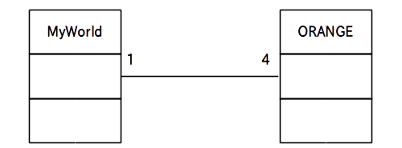

次に関連について学びます。
関連は更に
の 3 つのサブ関係に分かれるのですが、ここではまず関連そのものについて説明します。
その後次ページで集約について説明します。
なおコンポジションと依存は今回のアクティビティでは取り扱いませんので、興味のある人は自分で調べて下さい。
関連は2つ以上のクラスが「何らかの関係」を持っていることを表すために使われます。
何らかのと言われても漠然としていて分かりにくいのですが、具体的には
などの関係が「何らかの関係」の例として挙げられます。
この「関連」をクラス図で表す場合はクラス間を「リンク」と呼ばれる線で結び、リンクの上に「多重度」を記述します(図1)。
図1: 関連のクラス図

図1の例ではクラスAとクラスBの間にリンクが張られていますので、お互いに何らかの関係があるという事が分かります。
※ ただし具体的にどういう関係があるかはこの図だけでは分かりません
また「多重度(A→B)」は A の 1 つのインスタンスから見て B のインスタンスはいくつ関係しているかということを示しています。
ではまた具体的な例を挙げて説明しましょう。
新たに MyWorld というクラスを作ることにし、MyWorld と ORANGE の関係を図 2 に示す関連のクラス図で表すことにします。
図2: 関連のクラス図の例
さてこのクラス図はリンクをたどる方向によって以下の 2 通りの解釈が可能です。
方向1: MyWorld → ORANGE 方向
この方向の場合は MyWorld からみると ORANGE の多重度が 4 なので
「1 つの MyWorld のインスタンスは 4 個の ORANGE のインスタンスと何か関係がある」
という解釈になります。
方向2: ORANGE → MyWorld 方向
この方向の場合は ORANGE からみると MyWorld の多重度が 1 なので
「1 個のORANGE のインスタンスは 1 つの MyWorld のインスタンスと何か関係がある」
という解釈になります。